7 Чудес: Дуэль
Антуан Боза и Бруно Катала. Игра для двоих. Метка «стр. N» открывает страницу оригинального буклета.
Шпаргалка
Ваш ход
- Возьмите доступную карту (её ничто не перекрывает) и сделайте одно из трёх:
- 1) Постройте здание — заплатите его стоимость.
- 2) Сбросьте карту — получите 2 + 1 за каждую свою жёлтую карту.
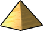
3) Постройте чудо — подложите карту под чудо и заплатите стоимость чуда.- Затем откройте карты, которые стали доступны.
Ресурсы и торговля
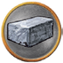
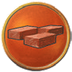
сырьё — коричневые карты;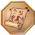
товары — серые.- Ресурсы не тратятся — они есть у вас каждый ход.
- Не хватает? Купите у банка: цена = 2 + число таких символов на коричневых и серых картах соперника.
- Жёлтые карты «1 » — этот ресурс всегда стоит 1 монету.
- Белый символ цепочки на вашей карте → следующее здание цепочки бесплатно.
Мгновенная победа
- Каждый щит — шаг маркера конфликта к сопернику. Дошёл до его столицы — военная победа.
-
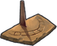
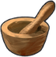
- Пара одинаковых научных символов → берите жетон прогресса. 6 разных символов — научная победа.
Конец эпохи и игры
- За партию строится только 7 чудес, восьмое — в коробку.
- Кто слабее в военном деле, выбирает, кто начнёт следующую эпоху.
- Очки: военный трек (0/2/5/10) + карты + чудеса + жетоны прогресса + 1 очко за каждые 3 .
- Ничья → побеждает тот, у кого больше на синих картах.
Об игре стр. 2–3
Игра для двоих в мире «7 чудес». Она использует основные механики старшей игры, но предлагает новый подход, специально для дуэли.
Состав игры
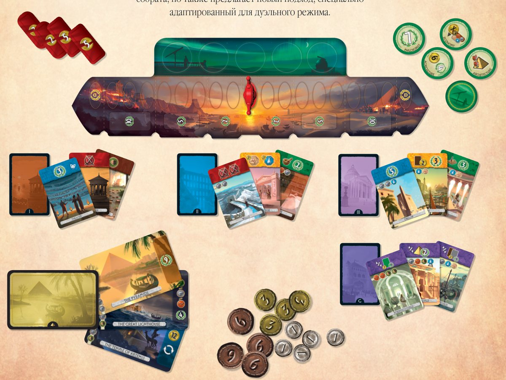
- 1 игровое поле
- 23 карты I эпохи, 23 карты II эпохи, 20 карт III эпохи
- 7 карт гильдий
- 12 карт чудес
- 4 военных жетона
- 10 жетонов прогресса
- 1 маркер конфликта
- 31 монета (14 номиналом 1, 10 номиналом 3 и 7 номиналом 6)
- 1 блокнот для подсчёта очков, 1 книга правил, 1 памятка
Описание и цель игры
Каждый игрок — лидер цивилизации, возводящий здания и чудеса света. Всё, что построил игрок, вместе называется его «городом».
Партия длится три эпохи. В каждой используется своя колода (I, потом II, потом III). Каждая карта эпохи — здание. За эпоху каждый игрок сыграет примерно по 10 карт: зарабатывает монеты, усиливает армию, делает научные открытия и обустраивает город.
Победить можно тремя способами:
- военное превосходство — в любой момент, игра сразу заканчивается;
- научное превосходство — в любой момент, игра сразу заканчивается;
- гражданская победа — если к концу III эпохи никто не победил, выигрывает набравший больше победных очков.
Элементы игры стр. 4–5
Карта чуда света
Большие карты — чудеса света античной эпохи. У каждого есть название, стоимость строительства (слева) и игровой эффект (справа).
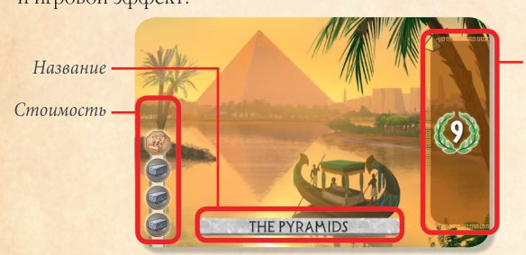
Поле
Поле отражает военное соперничество двух городов. Оно разделено на зоны (9) и ячейки (19). Крайние ячейки с каждой стороны — столицы игроков. На поле кладут военные жетоны и жетоны прогресса, доступные в этой партии.
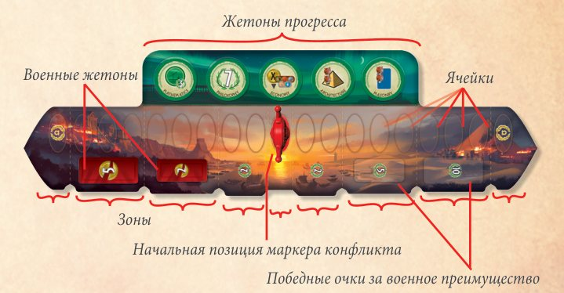
Жетоны, маркер и монеты
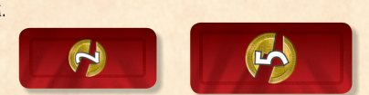
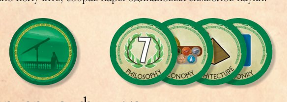
Военные жетоны — выгода, которую получает город, закрепивший военное преимущество над соперником.
Жетоны прогресса — эффекты, которые можно получить, собрав пару одинаковых научных символов.
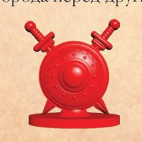
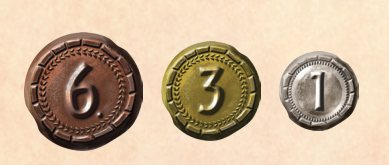
Маркер конфликта показывает на поле военное преимущество одного города над другим.
Монетами оплачивают строительство некоторых зданий и покупку ресурсов через торговлю. Городская казна (накопленные монеты) приносит очки в конце игры.
Карты эпох и гильдий
Все карты эпох и гильдий — здания. У них есть название, игровой эффект и стоимость.
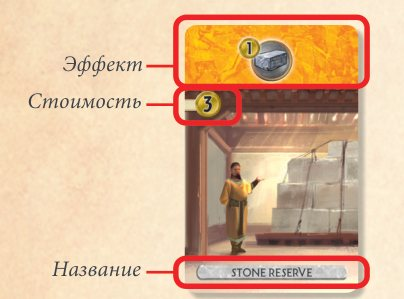
7 типов зданий различаются по цвету:
- Сырьё (коричневые) — производят ресурсы: дерево, камень, глину.
- Товары (серые) — производят ресурсы: стекло, папирус.
- Гражданские здания (синие) — приносят победные очки .
- Научные здания (зелёные) — приносят победные очки и дают научный символ:
- Торговые здания (жёлтые) — дают монеты , производят ресурсы, меняют правила торговли, иногда приносят очки.
- Военные здания (красные) — увеличивают военную мощь (щиты).
- Гильдии (фиолетовые) — приносят очки в зависимости от условий.
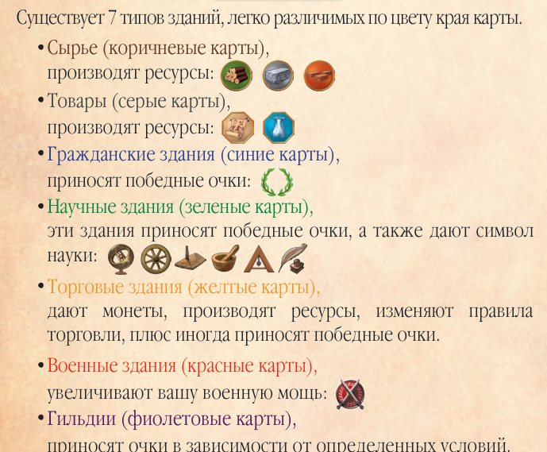
Стоимость карт
Стоимость указана в области под цветной полосой. Если там пусто — здание бесплатное.
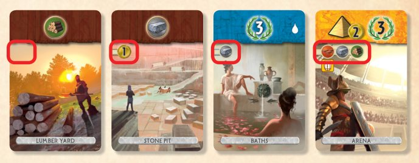
Начиная со II эпохи, у некоторых зданий кроме стоимости есть условие бесплатного строительства: если игрок раньше построил здание, указанное символом, строительство бесплатно.
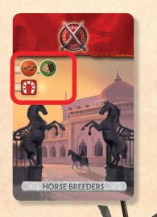
Подготовка стр. 6–7
- Положите поле сбоку игровой зоны, между игроками.
- Поставьте маркер конфликта на нейтральную ячейку в середине поля.
- Положите 4 военных жетона на их места лицом вверх.
- Перемешайте жетоны прогресса, случайно возьмите 5 и положите на поле лицом вверх. Остальные верните в коробку.
- Каждый игрок берёт из банка 7 монет.
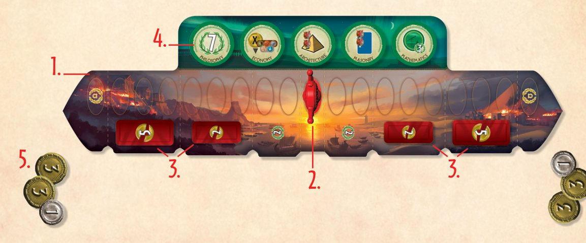
Фаза выбора чудес света
- Определите первого игрока.
- Перемешайте 12 карт чудес.
- Положите 4 случайных чуда лицом вверх между игроками.
- Первый игрок выбирает 1 чудо.
- Второй игрок выбирает 2 чуда.
- Первый игрок берёт оставшееся.
- Положите ещё 4 чуда и повторите, но начинает второй игрок.
В итоге у каждого 4 чуда — положите их колонкой слева в своей игровой зоне.
Первый игрок: Пирамиды, Александрийский маяк, Храм Артемиды, Статуя Зевса.
Второй игрок: Большой цирк, Пирей, Аппиева дорога, Колосс.
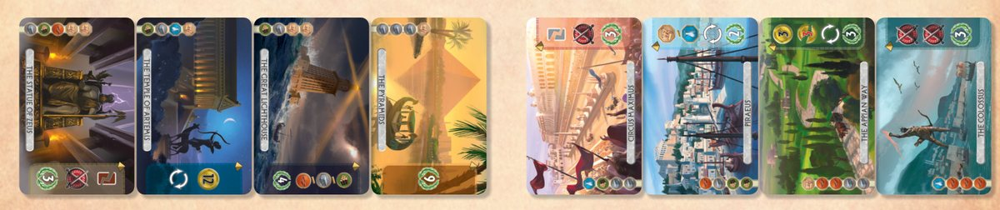
Одна колода на эпоху
Не глядя уберите в коробку по 3 карты из каждой колоды эпохи. Затем случайно возьмите 3 карты гильдий и не глядя добавьте их в колоду III эпохи. Остальные гильдии — в коробку.
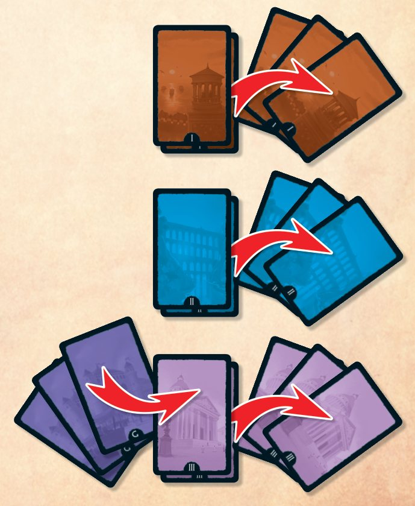
Расположение карт в зависимости от эпохи стр. 20
В начале каждой эпохи перемешайте её колоду и разложите 20 карт по схеме. Белые карты — лицом вверх, закрашенные — лицом вниз. Удобно начинать с места, отмеченного стрелкой.
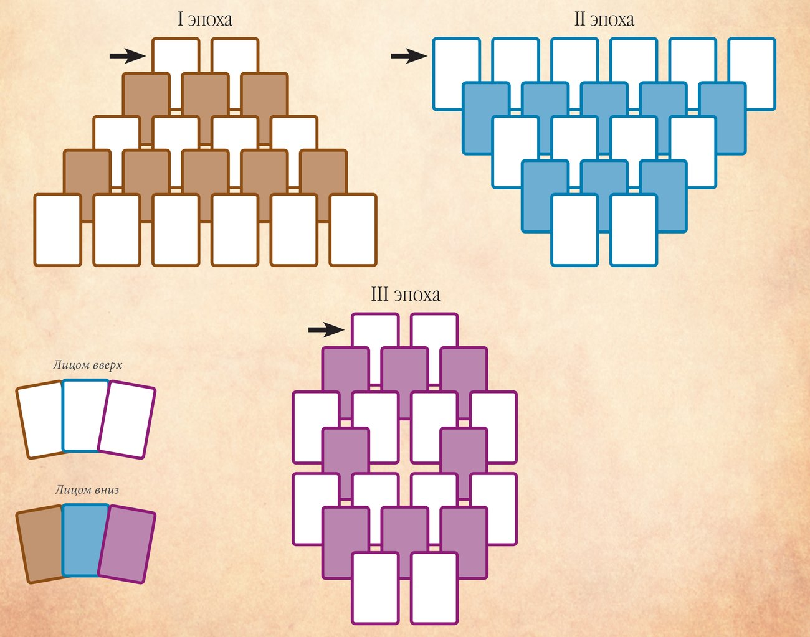
Правила строительства стр. 8–9
Для большинства зданий нужны ресурсы. Некоторые здания бесплатны, другие оплачиваются монетами, у некоторых есть условие бесплатного строительства. Для всех чудес света нужны ресурсы.
Бесплатное строительство
У некоторых карт нет стоимости — они строятся бесплатно.
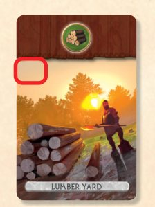
Стоимость в ресурсах и производство
Чтобы построить здание, нужно произвести нужные ресурсы И/ИЛИ купить их у банка через торговлю.
Ресурсы производят коричневые, серые, некоторые жёлтые карты и некоторые чудеса света. Если в городе есть все ресурсы, указанные на здании, его можно построить.
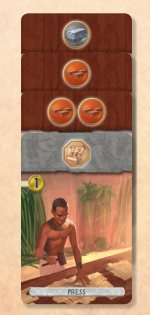
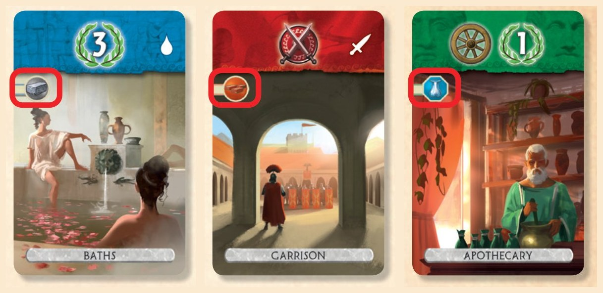
Торговля
Если не хватает ресурсов, вы всегда можете купить недостающие у банка. Цена каждого ресурса меняется по ходу игры:
Уточнения
- Цена считается по ресурсам соперника, но платите вы в банк.
- Число покупок за ход не ограничено.
- Ресурсы с жёлтых карт и чудес соперника на цену не влияют.
- Некоторые торговые здания (жёлтые) устанавливают цену определённых ресурсов в 1 монету.
• Если Антуан захочет купить камень, он заплатит по 4 монеты за каждый.
• Если Бруно понадобится третий камень, он заплатит 2 монеты — на коричневых картах Антуана камня нет.
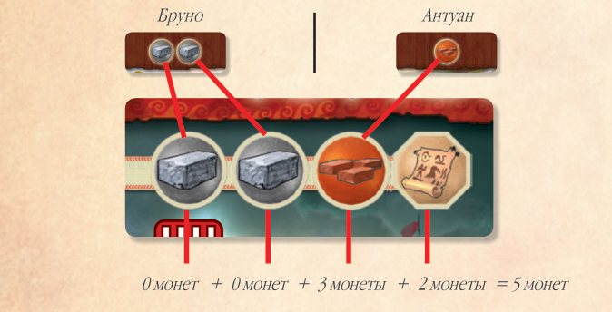
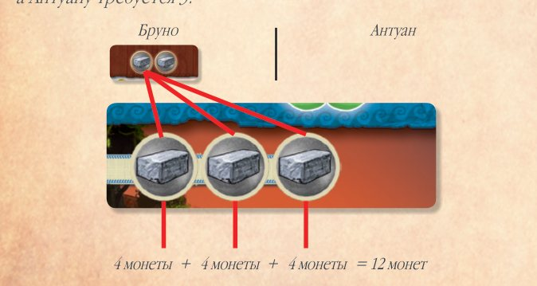
Стоимость в монетах
Некоторые карты стоят монет — их платят в банк.
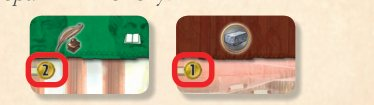
Стоимость в монетах и ресурсах
Заплатите монеты в банк, а ресурсы произведите или купите.
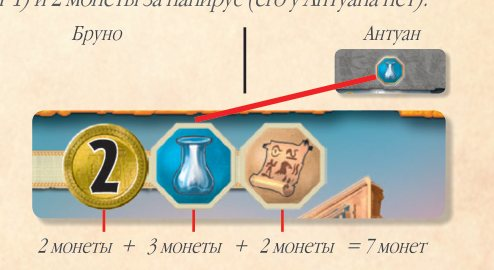
Условие бесплатного строительства (цепочки)
На некоторых зданиях есть белый символ цепочки. У зданий II и III эпох под стоимостью может быть такой же белый символ. Если этот символ уже есть в вашем городе, новое здание строится бесплатно.
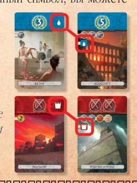
Бруно построил «Частокол». В III эпохе он бесплатно построит «Укрепления».
Полный список цепочек — в разделе «Список карт».
Ход игры стр. 10–11
Игра идёт с I по III эпоху. При военной или научной победе партия сразу заканчивается.
Подготовка структуры
В начале каждой эпохи перемешайте её колоду и разложите 20 карт по схеме (см. раскладку). Некоторые карты лежат лицом вверх, другие — вниз.
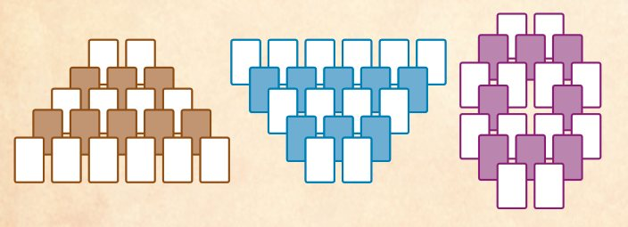
Описание хода
Игроки ходят по очереди. I эпоху начинает первый игрок.
В свой ход выберите «доступную» карту в структуре и сыграйте её. Доступна карта, которую не перекрывают (даже частично) другие карты.
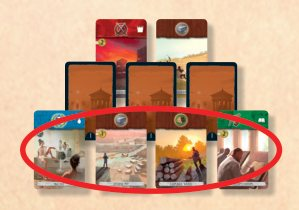
Выбранную карту можно сыграть одним из трёх способов:
После этого откройте карты, которые стали доступны (те, что лежали лицом вниз).
• Некоторые чудеса позволяют походить снова. Новый ход начинается после того, как вы откроете новые доступные карты.
• Если эффект «ещё один ход» срабатывает в конце эпохи (структура пуста), он теряется.
1. Строительство здания
Оплатите стоимость и положите здание перед собой — теперь оно часть вашего города. Для наглядности группируйте здания по цветам.
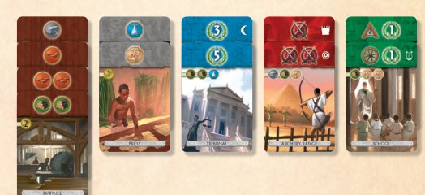
2. Сброс карты за монеты
Сбросьте карту и возьмите из банка 2 монеты + 1 монету за каждую жёлтую карту в вашем городе.
Сброшенные карты лежат лицом вниз рядом с полем. Смотреть стопку сброса можно в любой момент.
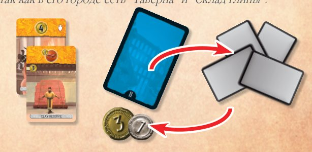
3. Строительство чуда света
Оплатите стоимость чуда (а не карты эпохи) и подложите карту эпохи лицом вниз под карту чуда. Сама карта эпохи ничего не даёт — она лишь показывает, что чудо построено.
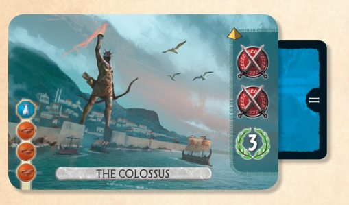
7 чудес, не больше!
За партию можно построить только 7 чудес. Как только построено седьмое, оставшееся восьмое сразу возвращается в коробку.
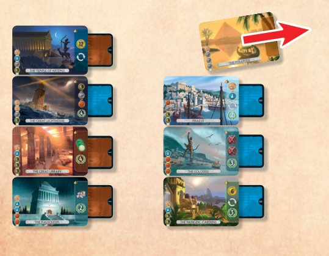
Конец эпохи стр. 11
Эпоха заканчивается, когда сыграны все 20 карт её структуры. Подготовьте структуру следующей эпохи.
Игрок с меньшей военной мощью выбирает, кто начнёт следующую эпоху. Военная мощь меньше у того, на чьей стороне поля стоит маркер конфликта.
Если маркер ровно посередине, следующую эпоху начинает тот, кто ходил последним (сыграл последнюю карту предыдущей эпохи).
Военное дело стр. 12
Каждый щит на военных зданиях (красных) и чудесах позволяет владельцу сразу сдвинуть маркер конфликта на одну ячейку в сторону столицы соперника. Маркер обычно ходит по треку туда и обратно.
Когда маркер входит в зону, отмеченную пунктиром, действующий игрок применяет эффект военного жетона этой зоны и убирает жетон в коробку.
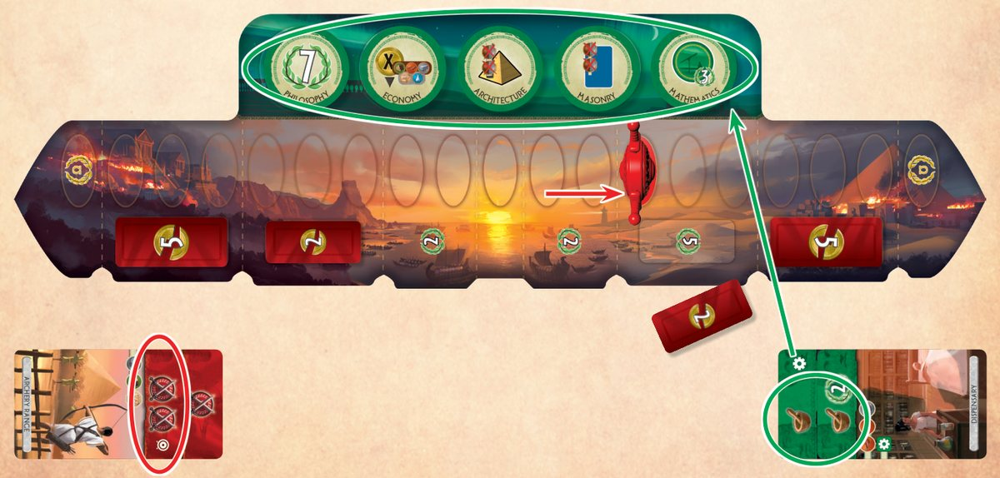
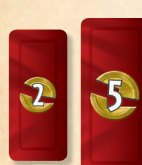
Военные жетоны: потеря 2 или 5 монет
Соперник теряет 2 или 5 монет (в банк), жетон — в коробку. Если монет не хватает, соперник теряет все оставшиеся.
Военное превосходство
Если маркер конфликта встаёт на ячейку со столицей соперника, вы сразу побеждаете.
Наука и прогресс стр. 12
Существует 7 разных научных символов.
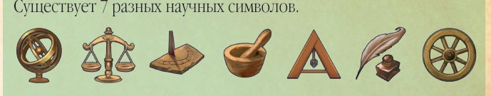
Каждый раз, когда у вас появляется пара одинаковых научных символов, вы сразу выбираете один из жетонов прогресса на поле. Он остаётся в вашем городе до конца игры.
Научное превосходство
Собрав 6 разных научных символов, вы сразу побеждаете.
Конец игры и победа стр. 13
Игра сразу заканчивается при военном или научном превосходстве, а иначе — в конце III эпохи.
Гражданская победа
Если до конца III эпохи никто не победил превосходством, выигрывает игрок с наибольшим числом победных очков. Сложите:
- очки с военного трека (0, 2, 5 или 10 — по позиции маркера);
- очки зданий (синие, зелёные, жёлтые и фиолетовые карты);
- очки чудес света;
- очки жетонов прогресса;
- казну: каждые полные 3 монеты = 1 очко.
При ничьей побеждает игрок с большим числом очков на гражданских зданиях (синих). Если и тут ничья, игроки делят победу.
Жетоны прогресса стр. 14
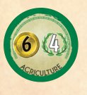
Земледелие
Сразу возьмите 6 монет из банка. Жетон приносит 4 победных очка.
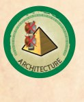
Архитектура
Новые чудеса света стоят вам на 2 ресурса меньше. При каждом строительстве вы сами выбираете, какие это ресурсы.
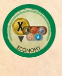
Экономика
Вы получаете деньги, которые соперник тратит на покупку ресурсов в торговле.
Только деньги за покупку ресурсов. Монеты из стоимости зданий не учитываются.
Если у соперника действуют торговые скидки («Склад камня», «Склад дерева», «Склад глины», «Таможня»), вы получаете столько, сколько он реально заплатил.
Закон
Жетон даёт научный символ (весы).
Каменная кладка
Новые гражданские здания (синие) стоят вам на 2 ресурса меньше. При каждом строительстве вы выбираете, какие это ресурсы.
Математика
В конце игры 3 победных очка за каждый ваш жетон прогресса (включая этот).
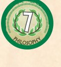
Философия
Жетон приносит 7 победных очков.
Стратегия
Новые военные здания (красные) дают вам 1 дополнительный щит.
Новое военное здание с 2 щитами сдвинет маркер конфликта на 3 ячейки.
Не действует на чудеса со щитами и на уже построенные военные здания.
Теология
Все чудеса, которые вы построите в будущем, получают эффект «Сделайте ещё один ход».
Не суммируется с чудесами, у которых этот эффект уже есть: два дополнительных хода получить нельзя.
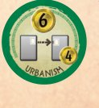
Урбанизм
Сразу возьмите 6 монет из банка. Каждый раз, когда строите здание бесплатно по цепочке, получайте 4 монеты.
Символы на картах эпох стр. 15
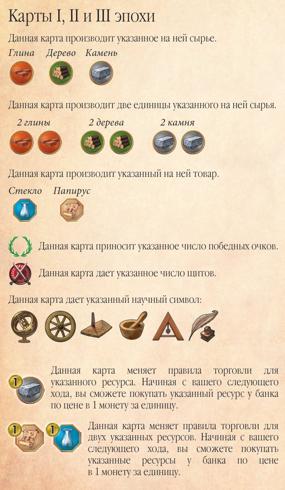
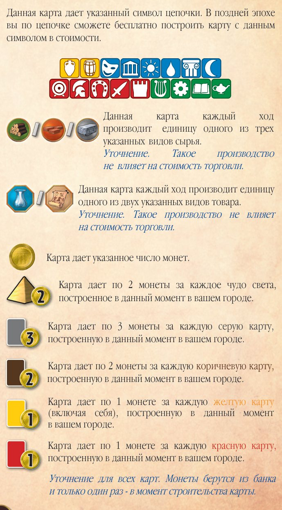
- Сырьё (глина, дерево, камень): карта производит указанное сырьё. Два одинаковых символа — две единицы.
- Товар (стекло, папирус): карта производит указанный товар.
- Лавровый венок с числом: победные очки.
- Щиты: военная сила.
- Научный символ: один из 7 символов науки:
- Ресурс с монетой «1»: со следующего хода вы покупаете этот ресурс (или два указанных) у банка по 1 монете.
- Белый символ цепочки: в поздней эпохе вы бесплатно построите карту с этим символом в стоимости.
- Ресурсы через «/»: каждый ход карта производит одну единицу одного из указанных ресурсов (1 из 3 видов сырья или 1 из 2 видов товара). Такое производство не влияет на цены торговли.
- Монета с числом: карта даёт указанное число монет.
- Пирамида + 2: 2 монеты за каждое чудо в вашем городе.
- Серая карта + 3: 3 монеты за каждую серую карту в вашем городе.
- Коричневая карта + 2: 2 монеты за каждую коричневую карту в вашем городе.
- Жёлтая карта + 1: 1 монета за каждую жёлтую карту (включая эту).
- Красная карта + 1: 1 монета за каждую красную карту.
Карты гильдий стр. 16
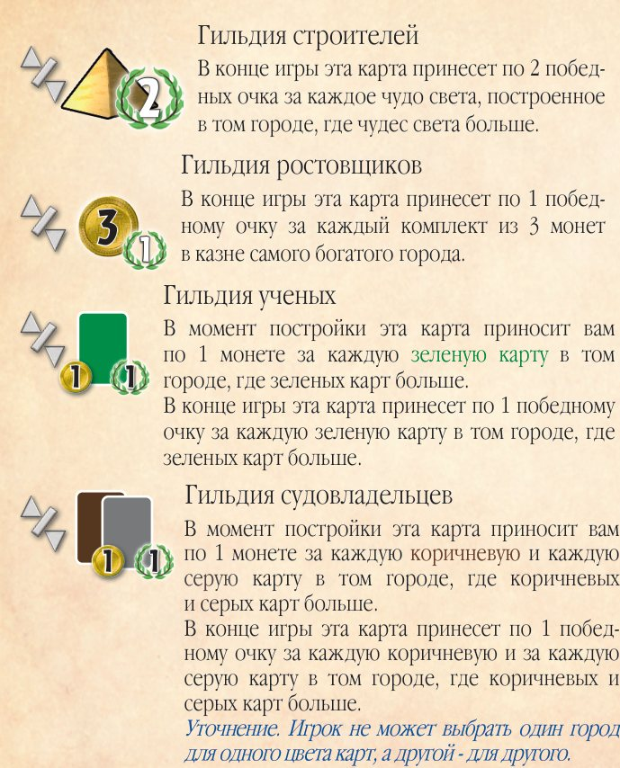
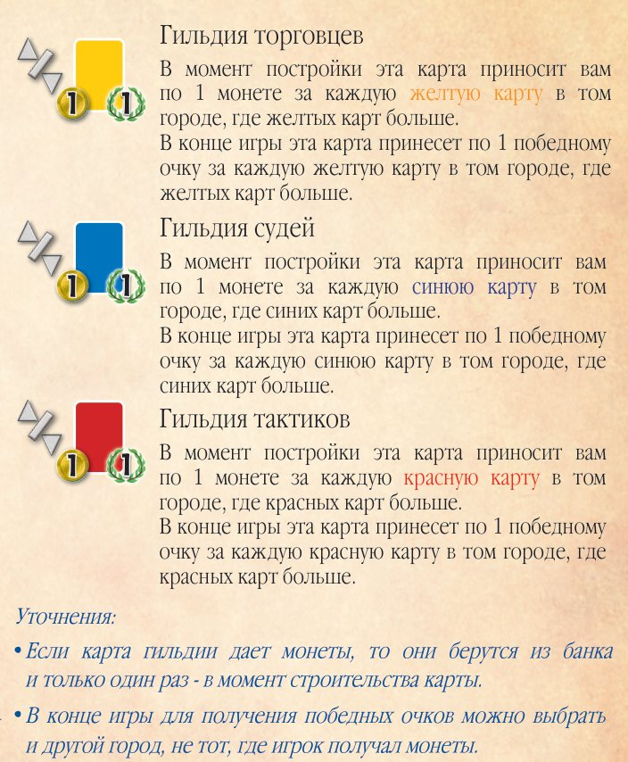
Гильдия строителей
В конце игры 2 очка за каждое чудо в городе, где чудес больше.
Гильдия ростовщиков
В конце игры 1 очко за каждые 3 монеты в казне самого богатого города.
Гильдия учёных
При постройке: 1 монета за каждую зелёную карту в городе, где зелёных карт больше. В конце игры: 1 очко за каждую зелёную карту в таком городе.
Гильдия судовладельцев
При постройке: 1 монета за каждую коричневую и каждую серую карту в городе, где коричневых и серых карт больше. В конце игры: 1 очко за каждую такую карту в таком городе.
Гильдия торговцев
При постройке: 1 монета за каждую жёлтую карту в городе, где жёлтых карт больше. В конце игры: 1 очко за каждую жёлтую карту в таком городе.
Гильдия судей
При постройке: 1 монета за каждую синюю карту в городе, где синих карт больше. В конце игры: 1 очко за каждую синюю карту в таком городе.
Гильдия тактиков
При постройке: 1 монета за каждую красную карту в городе, где красных карт больше. В конце игры: 1 очко за каждую красную карту в таком городе.
• Монеты с гильдии берутся из банка один раз — в момент строительства.
• В конце игры для очков можно выбрать другой город, не тот, за который получали монеты.
Чудеса света стр. 17
Значок ↻ на чуде — «Сразу же сделайте ещё один ход».
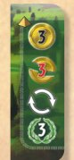
Аппиева дорога (The Appian Way)
Сразу возьмите 3 монеты из банка. Соперник сразу теряет 3 монеты (в банк). Сразу сделайте ещё один ход.
3 очка.
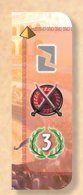
Большой цирк (Circus Maximus)
Выберите серую карту (товары), построенную соперником, и отправьте её в сброс. 1 щит.
3 очка.
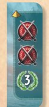
Колосс (The Colossus)
2 щита.
3 очка.
Александрийская библиотека (The Great Library)
Случайно возьмите 3 жетона прогресса из тех, что убрали в начале игры. Выберите и сыграйте один, два других верните в коробку.
4 очка.
Александрийский маяк (The Great Lighthouse)
Каждый ход производит 1 единицу одного из видов сырья на выбор: камень, глину или дерево. Не влияет на цены торговли.
4 очка.
Висячие сады (The Hanging Gardens)
Сразу возьмите 6 монет из банка. Сразу сделайте ещё один ход.
3 очка.
Галикарнасский мавзолей (The Mausoleum)
Возьмите все карты, сброшенные с начала игры, выберите одну и сразу постройте её бесплатно.
Карты, убранные при подготовке, не входят в стопку сброса.
2 очка.
Пирей (Piraeus)
Каждый ход производит 1 единицу товара на выбор: стекло или папирус. Не влияет на цены торговли. Сразу сделайте ещё один ход.
2 очка.
Пирамиды (The Pyramids)
9 очков.
Сфинкс (The Sphinx)
Сразу сделайте ещё один ход.
6 очков.
Статуя Зевса (The Statue of Zeus)
Выберите коричневую карту (сырьё), построенную соперником, и отправьте её в сброс. 1 щит.
3 очка.
Храм Артемиды (The Temple of Artemis)
Сразу возьмите 12 монет из банка. Сразу сделайте ещё один ход.
Очков не приносит.
Список карт стр. 18–19
Нажмите на картинку, чтобы увеличить.
Карты без цепочек
Карты с цепочками
| I эпоха | II эпоха | III эпоха |
|---|---|---|
| Конюшни | Коневоды | |
| Казармы | Гарнизон | |
| Частокол | — | Укрепления |
| Стрельбище | Осадная мастерская | |
| Плац | Цирк | |
| Скрипторий | Библиотека | |
| Фармацевт | Диспансер | |
| Школа | Университет | |
| Лаборатория | Обсерватория | |
| Театр | Статуя | Сады |
| Алтарь | Храм | Пантеон |
| Бани | Акведук | |
| Трибуна | Сенат | |
| Таверна | — | Маяк |
| Пивоварня | Арена |
Страницы оригинального буклета
Листайте страницы свайпом влево-вправо. Нажмите на страницу, чтобы открыть её на весь экран — там тоже можно листать.